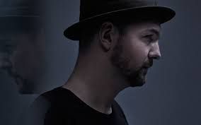

Saving the world from monday till friday. Making the world dance on weekends.
|  |
Kölsch |
From the face-twisting melodic drive of ‘Opa’ and ‘Bappedekkel’, to the chord-surfing piano groove of ‘Der Alte’ and the euphoric crescendos of ‘Lorely’, ‘Oma’ and ‘All That Matters’ (all hits in different countries), the fact remains that whether in your living room, on the dancefloors of the world’s greatest parties, or simply in your headphones on your way home, Kölsch’s ‘1977’ has re-defined techno and become an achievement that speaks for itself. |
Nora en Pure |
Nora En Pure is the deep house & indie dance music sensation that is rippling through the sonic sphere with her beautiful blend of electronic beats. |
|
Worakls |
He comes from a musical family, he started learning the piano at age 3. After studying in a conservatory, he dedicated his time for electronic music and composition. He has found success with his remixes and engaged on a world tour and appearances in techno music festivals in preparation for a studio album. His track "Porto" charted in SNEP French Singles Chart. In November 2014, he founded the label Hungry Music with his friends N'to and Joachim Pastor. |